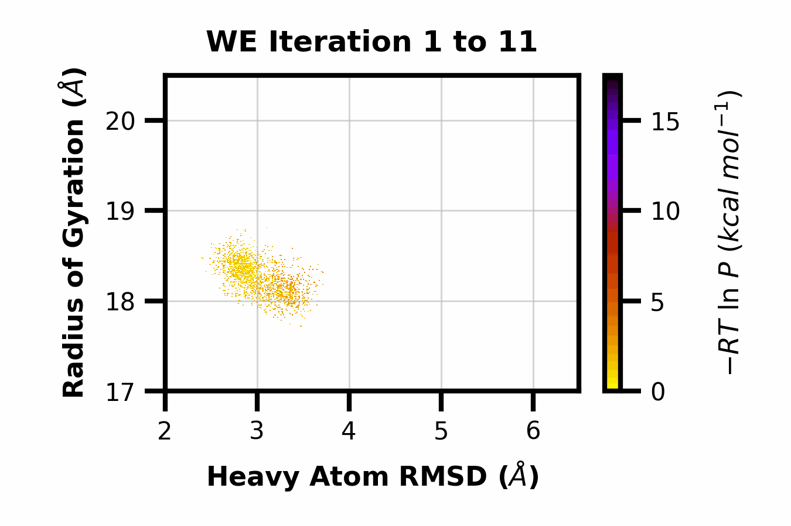

Research
Force Field Development
Force Fields
Parameters for the AMBER ff15ipq protein force field. I was a part of the validation efforts for the ff15ipq-m force field [1] and have also fully developed and parameterized ff15ipq compatible parameters for the fluorinated, aromatic amino acids that are commonly used in 19F NMR [2]. To help with validation of the fluorinated amino acid parameters, I developed a way to calculate pragmatically 19F NMR relaxation rates. I've also worked on a more automated workflow for parameterizing new ligand molecules in the context of the ff15ipq force field.
- [1] The Journal of Chemical Physics (2020)
- [2] The Journal of Physical Chemistry A (2022)
- Code for 19F ff15ipq parameters
- Code for general ff15ipq ligand parameterization
- Code for calculating 19F NMR relaxation rates from MD simulation data
Rare Event Sampling of Viral Capsids
Enhanced Sampling
We were finally able to resolve the atomic-resolution details of an alternate, “invisible” dimeric state of the HIV-1 capsid protein (after knowing about its existence for over a decade). We used a combination of 19F NMR, weighted ensemble molecular dynamics simulations, Markov state modelling, and machine learning for interaction analysis. We experimentally validated the resulting structures, transition rates, and pathways of interconversion between multiple protein conformations. We hope that this integrated methodology is applicable to other systems with alternate states that cannot be characterized by experiment or simulation alone.
- Publication: The Proceedings of the National Academy of Sciences (2025)
- News article: PSC: Science Highlights
- News article: TACC: Feature Story
- News article: CMU: Mellon College of Science Highlight
- Accompanying data and code
Reinforcement Learning-based Weighted Ensemble Simulations
Enhanced Sampling
We developed a weighted ensemble path sampling strategy using concepts from reinforcement learning to automatically identify effective progress coordinates among a set of potential candidates on-the-fly during a simulation. Because of the statistically consistent nature of WE trajectory reweighting, the simulations maintain rigorous kinetics witout the need for, e.g. post-hoc Markov state modelling to correct for sampling biases.
- Preprint: bioRxiv (2024)
- Code (to be released)
19F NMR
NMR
By combining a diHis motif, Co2+, and a chelating ligand, we can get orthogonal pseudocontact shift (PCS) datasets. This allows us to look at exact atomic positions within a distance range using the same protein.
- Paper: The Journal of the American Chemical Society (2023)
- MD simulations and QM calculations to support PCS results
Data Analysis and Visualization
Analysis Tools

We developed WEDAP: A Python package for Weighted Ensemble Data Analysis and Plotting. This package was made for dealing with complex datasets from weighted ensemble simulations, but also works for standard simulations. We provide a CLI, Python API, and GUI interface to analyze and plot large-scale simulation data.